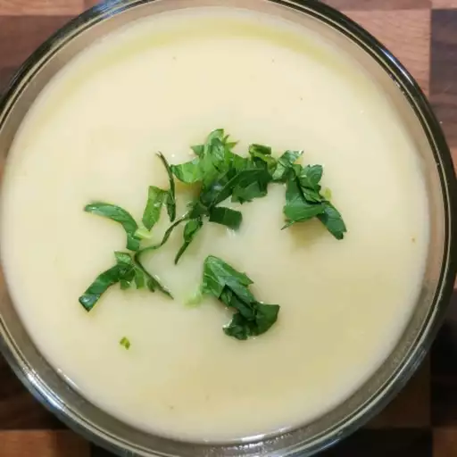

Vegetarian Potato-Leek Soup

Description
Healthy potato-leek soup for vegetarians.
Ingredients
- 1/4 cup olive oil
- 1 container vegetable broth
- 2 cups water
- 2 pounds potatoes, cut into cubes
- 1/3 teaspoon cayenne pepper
- 1/4 teaspoon salt
Directions
- Heat 2 tablespoons olive oil in a stock pot over medium heat. Cook and stir leeks in hot oil until completely softened, adding remaining olive oil in small amounts as you cook the leeks, about 10 minutes.
- Pour vegetable broth and water into the pot; add potatoes. Bring mixture to a boil, reduce heat to medium-low, and cook at a simmer until the potatoes are completely tender, about 25 minutes.
- Pour potato mixture into a blender no more than half full. Cover and hold lid down; pulse a few times before leaving on to blend. Puree in batches until smooth. Stir cayenne pepper and salt into the soup.